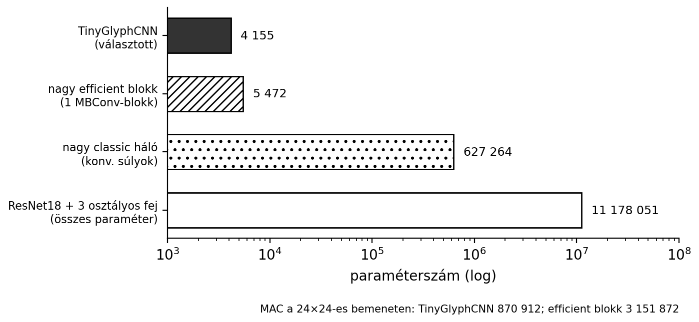

Ez az V. ellenőrző pont. A hallgató a 20.1. Feature extractor és új fej–20.3. Preprocessing, domain shift és súlylicenc egységekben megismerte a feature extractor és az új fej, a finomhangolás, valamint a preprocessing- és licencszerződés fogalmát. A 19.4. ConvNeXt és a recept/architektúra elválasztása a recept és az architektúra szétválasztását adta, a 16.4. IV. ellenőrző pont: a CNN-operátor teljes megértése a CNN-operátor teljes specifikációját, a 8.4. II. ellenőrző pont: korrekt tanulási állítás pedig a korrekt tanulási állítás keretét. Itt nem új réteget vezetünk be: a feladat az, hogy a három döntési dimenzió — architektúracsalád (classic/residual/efficient), tanítási mód (scratch/transfer) és erőforráskeret — együtt egyetlen, lektorálható architektúra-döntési lapba álljon össze.
Értékelés. A közös 0–4 rubrikát, a PASS-szabályt (mind az öt dimenzióban legalább 3-as szint) és a hibatípusonkénti visszautakat az 1.4. Tanulási diagnózis és kísérleti napló „Tanulási főút és ellenőrző pontok” szakasza adja meg; itt csak az eltérés: a riport helyett architektúra-döntési lapot adunk le, és a súlypont a D5 (az állítás és korlátai) dimenzió.
Induló kérdés: a GlyphLab adat (a függelék A. szakasza: 40.4. X. ellenőrző pont: önálló neurális modell és
bizonyíték) 360 képet tartalmaz,
-es,
egycsatornás; a feladat három vonalorientáció (függőleges, vízszintes,
átlós) osztályozása. A 360 kép 180 jelenet két nézete, ezért a független
mintavételi egység a scene_id, nem a kép. Válasszon a
feladatra architektúrát és tanítási módot. Melyik döntés igényel több
paramétert: egy VGG-szerű classic háló vagy egy kis saját CNN? Milyen
adat- és erőforrásfeltétel zárja ki az előtanított ResNet18-at az
alapforgatókönyvből? A becslést a szakasz végén a döntési lappal
ellenőrizzük.
A választási feladatot három szemponthalmaz feszíti ki.
Architektúracsalád. A classic jelző itt a
VGG-stílusú, egymásra rakott konvolúciós blokkokat jelöli:
Conv → ReLU → Pooling ismétlése, skip nélkül. A
residual család a [P06]-ban bevezetett
identitás-utat alkalmazza; ennek egyszerű, kétszer
-as
basic blokkját a 18.1. Reziduális blokk és
identitásút már tárgyalta. Az efficient család depthwise
separable és inverted residual blokkokat használ; a paraméterszám
csökkentésének levezetése a 19.1. Depthwise
separable és pointwise réteg alfejezetben szerepelt. A családok nem
rangsorolhatók abszolút értelemben: a 19.4. ConvNeXt
és a recept/architektúra elválasztása alfejezetben látott
matched-recept elv éppen azt mondja ki, hogy a kísérleti összevetés csak
akkor értelmes, ha a tanítási receptet azonos szinten tartjuk.
Tanítási mód. A scratch mód véletlen inicializálással indítja az összes súlyt. A feature extractor mód egy előtanított modell konvolúciós részét fagyasztja, és csak az új fejet tanítja. A finomhangolás ezen felül a konvolúciós súlyok egy részét vagy egészét is kis tanulási rátával frissíti. A három mód a 20.1. Feature extractor és új fej–20.2. Finomhangolás és tanulási ráta alfejezetben bevezetett fogalom.
Erőforráskeret és protokoll. A döntéshez rögzíteni kell: a paraméterszámot (), a konvolúciós szorzás-összeadás párok számát (MAC), az aktivációmemória nagyságrendjét, a rendelkezésre álló hardvert, az adat splitjét és a modellválasztási szabályt. A protokoll alapszabálya a 8.4. II. ellenőrző pont: korrekt tanulási állítás alfejezetből: a validációs loss választ best checkpointot, a testet pedig csak a választás után, egyszer értékeljük.
A képbatch alakja
,
a logité
,
a címke
a GlyphLab három osztályára. A konvolúciós súly alakja
,
hacsak a groups paraméter mást nem mond.
Jelöléstábla. A szakasz képletei a következő jelöléseket használják:
| Jelölés | Jelentés |
|---|---|
| batchméret | |
| bemeneti, kimeneti, illetve azonos be- és kimeneti csatornaszám | |
| térbeli magasság és szélesség | |
| konvolúciós kernel mérete (négyzetes, illetve magasság és szélesség szerint) | |
| konvolúciós súlytenzor, | |
| osztályszám (a logitok dimenziója) | |
| modell paramétereinek száma | |
| konvolúciós MAC-ok száma egy batchre | |
| konvolúciós padding | |
| bemeneti batch, logitkimenet, címke |
A tehát itt a súlytenzor, nem az osztályszám; a két mennyiséget a jelölés különbözteti meg. A a paraméterszám, a paddinget jelöli.
A levezetési kötelezettséghez egy olyan blokkot választunk, amelynek a paraméterszáma és műveletigénye zárt formában ellenőrizhető. A [P06] 3.1–3.2 szakasza alapján a basic residual blokk alapformája . A [P06] eredeti blokkja két -as konvolúció után batch normalizationt, és az összeadás után ReLU-t is tartalmaz; az itt bemutatott blokk ezeket elhagyja (egyszerűsített változat), hogy a képlet csak a domináns konvolúciós költséget tartalmazza. A bemutatott tehát két, bias nélküli -s konvolúcióból és egy közbeékelt ReLU-ból áll.
Definíció (egyszerűsített basic block). Legyen . A blokk
ahol
,
a két konvolúció stride-ja
,
paddingje
,
dilationje
,
groups paramétere
,
és
páratlan. A
a ReLU, amely csak az első konvolúció után áll (egyetlen közbeékelt
ReLU); a második konvolúció után az összeadásig nincs nemlinearitás,
ezért a főág kimenete negatív is lehet. A kód ezzel egyezik:
conv2(relu(conv1(x))) + x. Ha egy változat az összeadás
után még egy ReLU-t is alkalmaz, azt külön kell jelölni. Mivel
és
,
a 14.1. Stride, padding, dilation és kimeneti
méret alfejezetből ismert kimeneti méretképlet szerint a térbeli
méret
marad, tehát az identitás-összeadás
-szel
alakhelyes.
Állítás (paraméterszám és konvolúciós MAC, saját levezetés). A fenti blokkra
Itt
a modellsúlyok száma,
pedig a konvolúciós szorzás-összeadás párok (multiply-accumulate)
domináns száma egy bemeneti batchre. Az állítás feltétele:
stride=1, padding=(k-1)/2,
bias=False, groups=1, dilation=1,
és a bemeneti csatornaszám
azonos a kimenetivel. Az identitás-összeadás
elemi összeadást, az egyetlen ReLU
elemi maximumképzést ad; ezeket külön számoljuk, és a nagy
tartományban alacsonyabb rendűek.
Bizonyítás. Az első súlytensor elemeinek száma ; a másodiké ugyanannyi. Bias nincs, ezért . Egy konvolúcióban minden kimeneti elemhez szorzás és összeadás tartozik, mert az akkumulációs lánc első tagjához nem adódik még egy tag; az így elmaradó darab összeadás rendű, ezért a MAC-becslés a domináns tagot használja. A kimeneti elemek száma konvolúciónként , tehát egy konvolúció szorzás-összeadás párt végez. Két konvolúcióra ez . ∎
Legyen , , , . Ekkor
Az első konvolúció kimenete , tehát elemet tartalmaz; minden elemhez MAC tartozik, ami műveletpár. A második konvolúció ugyanennyit ad, így az összeg . A skip-összeadás további elemi összeadást jelent, amit a domináns MAC-képlet expliciten nem tartalmaz.
A képlet és a PyTorch-implementáció egyezését az alábbi kontroll
ellenőrzi. A kód futtatva; a paraméterszámot a beépített
assert is ellenőrzi.
# lab/n080_residual_check.py
import torch
torch.manual_seed(20261020)
class BasicResidualBlock(torch.nn.Module):
def __init__(self, C, k):
super().__init__()
assert k % 2 == 1
self.conv1 = torch.nn.Conv2d(C, C, k, stride=1,
padding=(k - 1) // 2, bias=False)
self.conv2 = torch.nn.Conv2d(C, C, k, stride=1,
padding=(k - 1) // 2, bias=False)
def forward(self, x):
return self.conv2(torch.relu(self.conv1(x))) + x
model = BasicResidualBlock(C=2, k=3)
n_params = sum(p.numel() for p in model.parameters())
assert n_params == 72, n_params
x = torch.randn(1, 2, 4, 4)
with torch.no_grad():
y = model(x)
print("params:", n_params, "output shape:", tuple(y.shape))
assert y.shape == (1, 2, 4, 4)Futtatás: python lab/n080_residual_check.py. A futtatott
kimenet (Python 3.12.3, torch 2.15.0+cpu, CPU,
torch.get_num_threads()=10,
seed=20261020):
params: 72 output shape: (1, 2, 4, 4)A shape-ellenőrzés a paddingfeltételből következik: a kimenet , mert a két konvolúció stride-ja és paddingje .
Előfeltétel. Python 3.12 és a cnn-labor
csomag rögzített környezete (uv sync: NumPy 2.3.5, PyTorch
2.14.1+cpu; a közölt kimenetek a könyv ellenőrző környezetéből, NumPy
2.5.4 és PyTorch 2.15.0+cpu alatt készültek), CPU; a labor a szakasz
kódját használja, a szükséges csomagokat a laborcsomag rögzített
környezete biztosítja. A lab/n080_decision_check.py
futtatható (python lab/n080_decision_check.py); a futó
kontroll a saját TinyGlyphCNN modellen fut, külső adatfájl
nem kell.
A labor elvárt eredménye egy kitöltött döntési lap, három elvetett
alternatíva indokával, valamint a kiválasztott modell kis futó
kontrollja. A döntési lap a GlyphLab adatszerződésre épül: train 240,
val 60, test 60 kép, független mintavételi egység a
scene_id, bemenet float32 NCHW
,
cél int64 osztályindex.
Döntési lap.
20261020.TinyGlyphCNN néven: két classic blokk
(8,8) és (16,16) csatornával,
-as,
padding
-es
bias nélküli konvolúciókkal, ReLU-val,
-es
maxpoolinggal, majd global average poolinggal és egy
Linear(16, 3) fejjel.A kiválasztott modell paraméterszáma pontosan:
A három elvetett alternatíva:
TinyGlyphCNN négy konvolúciója
MAC, tehát az efficient blokk önmagában több paramétert és kb.
-szor
annyi MAC-ot hoz. Indok az elvetésre: a 19.1.
Depthwise separable és pointwise réteg alfejezetből ismert
paramétercsökkentés előnye nagy csatornaszámnál és nagy térbeli méretnél
jelentős; a
-es,
egycsatornás feladaton a megtakarítás nem indokolja a nagyobb kapacitást
és a bonyolultabb normalizálási állapotot.A jelöltek nagyságrendi különbségét az alábbi log-skálás ábra
mutatja. A ResNet18 paraméterszámát (3 osztályos fejjel
,
az eredeti 1000 osztályos fejjel
)
a torchvision resnet18 rétegszerkezetéből analitikusan
számoltuk; a rögzített torchvision-verzióval
sum(p.numel() for p in model.parameters()) ellenőrzi.

A választott modell futó kontrollja:
# lab/n080_decision_check.py
import torch
torch.manual_seed(20261020)
class TinyGlyphCNN(torch.nn.Module):
def __init__(self):
super().__init__()
self.features = torch.nn.Sequential(
torch.nn.Conv2d(1, 8, 3, padding=1, bias=False),
torch.nn.ReLU(),
torch.nn.Conv2d(8, 8, 3, padding=1, bias=False),
torch.nn.ReLU(),
torch.nn.MaxPool2d(2),
torch.nn.Conv2d(8, 16, 3, padding=1, bias=False),
torch.nn.ReLU(),
torch.nn.Conv2d(16, 16, 3, padding=1, bias=False),
torch.nn.ReLU(),
torch.nn.MaxPool2d(2),
)
self.gap = torch.nn.AdaptiveAvgPool2d((1, 1))
self.head = torch.nn.Linear(16, 3, bias=True)
def forward(self, x):
z = self.features(x)
z = self.gap(z).flatten(1)
return self.head(z)
model = TinyGlyphCNN()
n_params = sum(p.numel() for p in model.parameters())
assert n_params == 4155, n_params
x = torch.rand(2, 1, 24, 24, dtype=torch.float32)
with torch.no_grad():
logits = model(x)
print("params:", n_params)
print("logits shape:", tuple(logits.shape))
assert logits.shape == (2, 3)Futtatás: python lab/n080_decision_check.py. A futtatott
kimenet (Python 3.12.3, torch 2.15.0+cpu, CPU,
torch.get_num_threads()=10,
seed=20261020):
params: 4155
logits shape: (2, 3)A
értéket a képlet és a kód assert-je egymástól függetlenül
ellenőrzi.
A döntési lapot egy kis empirikus összehasonlítással lehet validálni. Az alábbi protokoll a hallgatói futtatás előírása, nem a fejezet saját mérése; a könyv első laborjának (a GlyphLab-adat ellenőrzött jelentése, A. A GlyphLab adatkészlet) eredményétől független, új futásnak számít.
TinyGlyphCNN val loss-ában jobb-e, mint egy
nagyobb kapacitású változat?scene_id; egy
jelenet két nézete (view_id 0 és 1) ugyanabba a splitbe tartozik.TinyGlyphCNN, scratch, Adam,
lr=1e-3, batch 16; seedek: 20261020,
20261021, 20261022 mindkét változatra. Döntési
szabály: a
változatot csak akkor tekintjük jobbnak, ha a seedenként párosított
val-loss különbség jelenetszintű bootstrap 95%-os intervalluma teljesen
0 alatt van; ellenkező esetben a
marad (a kisebb modell az alapértelmezés). Erőforrás: CPU, 1 szál,
float32.data/corrupted_test.npy ugyanazon 60 képén mért accuracy
páros különbsége. A corrupt fájl sorrendje a metadata.csv
test sorainak sorrendjét követi, ezért a két predikció képenként
párosítható; a corrupt tesztet sem használjuk modellválasztásra.Referenciakód. A tanítási ciklus, a validációs loss
szerinti checkpointválasztás és az egyszeri clean–corrupt
teszt-kiértékelés referenciakódja a laborcsomag
lab/train_cnn.py fájlja: a ciklus a train()
függvényben van, a legjobb állapotot best_state őrzi, a
tesztkiértékelés pedig a clean és corrupt
szótárakat adja. A protokollhoz ebben a szkriptben a
SmallCNN osztályt kell a TinyGlyphCNN-re
cserélni, a második blokk csatornaszámát
paraméterként átadni, a modell paraméterszámára vonatkozó
assert-et a TinyGlyphCNN értékére állítani, a
hiperparamétereket pedig a fenti protokoll szerint beállítani (Adam,
lr=1e-3, batch 16, legfeljebb 30 epoch). A fejezet a
futtatás eredményét nem közli; a hallgató a saját futását naplózza.
F1 (fogalmi, nehézség 1). Definiálja a scratch, feature extractor és finomhangolás tanítási módot. Adjon egy-egy feltételt, amely mellett a GlyphLab-on a scratch, illetve a feature extractor értelmes választás. Elvárt eredmény: a három definíció, a frissített súlyok köre, és két indoklás.
F2 (levezetési/bizonyítási, nehézség 2). Adott egy
depthwise separable blokk: bemenet
,
depthwise konvolúció
-val,
groups=C, bias=False, stride=1,
padding=(k-1)/2, majd pointwise
-es
konvolúció
kimeneti csatornával, bias=False. Vezesse le a
paraméterszámot és az
konvolúciós MAC-ot. Hasonlítsa össze a basic residual blokkal
,
mellett. Elvárt: képletek, arány, feltételek.
F3 (implementációs, nehézség 2). Írjon
count_tiny(c1, c2) függvényt, amely a döntési lap
modelljének paraméterszámát adja vissza a két blokk csatornaszámából, és
egészítse ki a lab/n080_decision_check.py kontrollt egy
független képletalapú assert-tel. Elvárt: futtatható kód, a
4155 eset helyes visszaadása.
F4 (hibakeresési, nehézség 2). Egy döntési napló a legnagyobb modellt választotta, mert annak test accuracyja egy képpel (-tel) magasabb volt a baseline-nál. Mi a hiba, mi a következménye, és hogyan kell javítani? Elvárt: az ok megnevezése, a választási torzítás magyarázata és a javított munkafolyamat.
F5 (kísérleti/transzfer, nehézség 3). Tervezzen
összehasonlítást a GlyphLab-on a scratch TinyGlyphCNN és
egy külső előtanított ResNet18 feature extractor között. A terv
tartalmazza a preprocessing-szerződést, a licencellenőrzést, a
megfigyelési egységet, a baseline-t, a metrikát, az előre rögzített
döntési szabályt és az érvényességi korlátokat. Ha a transzfer hatását
izolálni akarja, vegyen fel véletlen inicializálású ResNet18 kontrollt
ugyanazzal a preprocessinggel. A külső súly itt opcionális; a [D13]
állapota miatt a konkrét súlyváltozatot további ellenőrzéshez kösse. A
beadandó terv kötelező elemei: hipotézis, a változó tényező, kontroll
(baseline), metrika és megfigyelési egység, a seedek száma és konkrét
értékei, számszerű döntési szabály, valamint erőforráskeret.
F1 megoldás. A scratch mód minden súlyt véletlen inicializálásból indít, és a teljes modellt tanítja. A feature extractor az előtanított modell konvolúciós részét fagyasztja; csak az új fej súlyai frissülnek. A finomhangolás a konvolúciós rész egy részét vagy egészét is frissíti, jellemzően kisebb tanulási rátával. A GlyphLab-on a scratch értelmes, mert a feladat kicsi, a bemenet -es grayscale, és nincs szükség külső domain reprezentációjára. A feature extractor akkor lenne értelmes, ha a külső modell bemeneti szerződése és licencfeltétele ellenőrzött, és a forrás-domain reprezentációja a célfeladatra is hasznos; a jelen adaton ez nem teljesül automatikusan.
F2 megoldás. A depthwise konvolúció súlyalakja
,
groups=C, tehát
.
A pointwise súlyalakja
,
tehát
.
Így
A depthwise konvolúció minden kimeneti elemhez MAC-ot használ, a kimeneti elemek száma , tehát . A pointwise konvolúció minden kimeneti elemhez MAC-ot használ, tehát . Összesen
A basic blokk és . Az összevetés alapja: egy blokk, azonos be- és kimeneti csatornaszámmal, azonos térbeli mérettel, bias nélkül, stride és azonos padding mellett; a basic blokk ReLU-ja és skip-összeadása járulék, a depthwise blokk normalizálását és aktivációját itt elhagyjuk. Az arány ezért a konvolúciós súlyokra és MAC-okra vonatkozik, nem két teljes architektúrára. , esetén , , az arány ; ez a -os csökkenés azonban részben abból adódik, hogy egy separable párt két teljes konvolúcióval vetünk össze. Azonos konvolúciószám mellett az összevetés a -hoz (egy pár egy teljes konvolúcióhoz), illetve az -höz (két pár a basic blokk két konvolúciójához): mindkettő kb. -os csökkenés, . A MAC-arány ugyanez, mert a térbeli és batchtényező kiesik.
F3 megoldás.
def count_tiny(c1, c2, k=3, classes=3):
p1 = 1 * c1 * k * k + c1 * c1 * k * k
p2 = c1 * c2 * k * k + c2 * c2 * k * k
head = c2 * classes + classes
return p1 + p2 + head
assert count_tiny(8, 16) == 4155A függvény a két blokk konvolúciós súlyait és a lineáris fej súlyát,
illetve biasát adja össze; a
és az osztályszám paraméter, ezért a képlet nem tartalmaz beégetett
-et
vagy
-at.
A c1=8, c2=16 eset a döntési lap értékét adja vissza. A
lab/n080_decision_check.py kontrollba a függvényt a szkript
elejére felvéve a modell létrehozása után a következő független
ellenőrzés kerül:
n_params = sum(p.numel() for p in model.parameters())
assert count_tiny(8, 16) == n_paramsÍgy a képlet és a PyTorch paraméterszámlálása egymástól függetlenül egyezik a értéken.
F4 megoldás. A hiba: a test halmazt használták modellválasztásra. Következmény: a test már nem független; a kiválasztási iteráció a testre illeszti a választást, ezért a mért test accuracy felfelé torzít, és a valós általánosítási hibát nem becsli. Javítás: a választást a val loss vagy val accuracy alapján kell elvégezni; a testet csak a rögzített, végleges modellre szabad egyszer futtatni. Ellenőrzés: a naplóban a választási oszlop val-metrikát tartalmazzon, és a test oszlop a választás előtt üres legyen.
F5 megoldásminta. Kérdés: a külső ResNet18 feature
extractor javítja-e a test accuracyt a scratch
TinyGlyphCNN-hez képest? A két kar architektúrában,
bemeneti szerződésben és inicializálásban is eltér, ezért a puszta
összehasonlítás nem izolálja a transzfer hatását. A matched-recipe elv a
tanítási receptre (optimizer, tanulási ráta, epochszám, augmentáció,
batchméret) és az adat/split kezelésére vonatkozik; a bemeneti felbontás
és a csatornaszám a modellek szerződése, ezért ezeket nem lehet
azonosítani. A transzferhatás izolálásához három kar kell: (1) baseline:
scratch TinyGlyphCNN, 24×24 grayscale; (2) előtanított
ResNet18 feature extractor, 224×224 RGB (a grayscale kép három
csatornára ismételve), az előírt ImageNet-normalizálással; (3) kontroll:
véletlen inicializálású ResNet18 (weights=None) ugyanazzal
a 224×224 RGB preprocessinggel és ugyanazzal a fejjel, szintén feature
extractor módban. A (2) − (3) különbség az előtanított súlyok hatását
méri; a (1) és a (2)/(3) összevetése rendszerszintű döntés, amelyben az
architektúra és a felbontás is szerepel. Protokoll: azonos tanítási
recept mindhárom karon (Adam, lr=1e-3, 30 epoch, batch 16,
augmentáció nélkül), azonos scene-szintű split és 3 seed; a checkpointot
a mentett állapotok közül a val loss választja [D09]. Döntési szabály: a
ResNet18-at csak akkor választjuk a TinyGlyphCNN helyett,
ha (a) a (2) val accuracyje jobb az (1)-nél, és a (2)−(1) páros,
jelenetszintű bootstrap 95%-os CI-je 0 fölött van, valamint (b) a
(2)−(3) különbség legalább 5 százalékpont, és CI-je szintén 0 fölött
van. A tesztet egyszer, a végleges modellen értékeljük. Licenc: a
TorchVision súly letöltési és felhasználási feltételeit külön
dokumentálni kell [D13]. Érvényességi korlátok: a 60 képes val halmazon
5 százalékpont 3 kép, ezért a küszöb zajérzékeny; a GlyphLab
szintetikus, az eredmény nem általánosítható természetes képekre; a
224×224-re nagyítás és a csatornaismétlés új preprocessing-shiftet visz
be, ezért a (2) és (3) kar is csak ezen a szerződésen belül
értelmezhető; a [D13] katalógus állapota miatt a konkrét súlyváltozat
ellenőrzése a kísérlet előfeltétele.
Kötelező elemek kiegészítve. Seedek: 20261020, 20261021,
20261022 (minden karra azonosak). Erőforráskeret: CPU, 1 szál,
float32; a futások számát (karok × seedek) és az
epochszámot a terv rögzíti, a tényleges futásidőt a napló méri.
Tipikus tévedés. „A legnagyobb elérhető modell nem automatikusan a legjobb feladatmegoldás.” Ennek ellenpéldája egy egydimenziós (D-s) regressziós szerkesztett eset: legyen a train három pontja , a generáló összefüggés . A lineáris modell paraméterekkel tökéletesen illeszkedik a train pontokra. A nagy kapacitású, hetedfokú polinom szintén átmegy mindhárom train ponton, mert a szorzótényező ott nulla; a tesztpontban, például -nél azonban a predikció -höz képest -tel tolódik el, azaz , durván téved. A nagyobb modell tehát azonos train illeszkedés mellett rosszabb tesztpredikciót adhat. A polinomos példa illusztráció, nem bizonyíték a CNN viselkedésére; a CNN-választásnál ugyanezt a jelenséget a finite-H korlát 8.4. II. ellenőrző pont: korrekt tanulási állítás fogalmazza meg: a nagyobb hipotézisosztály szélesebb általánosítási sávot nyit.
Önellenőrzés. A döntési lap akkor teljes, ha (1) a
bemeneti szerződés és a normalizálás rögzített; (2) a split
scene-szintű, és a testet nem érinti a választás; (3) a paraméterszám és
a MAC képlete a megadott bias, groups,
stride, padding feltételekkel egyezik; (4)
külső súly esetén a verzió, preprocessing és licenc forrása azonosított;
(5) a végső következtetés csak a rögzített protokollra vonatkozik.
Visszautalás. A 16.4. IV. ellenőrző pont: a CNN-operátor teljes megértése alfejezetből: a cross-correlation alak- és gradientszabálya a döntési lap minden konvolúciós sorában érvényes; az eltolási equivariance a stride és a határfeltétel függvénye. A 19.4. ConvNeXt és a recept/architektúra elválasztása alfejezetből: az architektúra címkéje nem örök rangsor, hanem adott receptfeltételhez kötött állítás.
Az architektúra-döntési lap a családot (classic/residual/efficient),
a tanítási módot (scratch/transfer) és az erőforráskeretet együtt
rögzíti. Az analitikusan ellenőrzött basic residual blokk paraméterszáma
,
konvolúciós MAC-ja
;
egy depthwise separable pár
()
egyetlen
,
teljes konvolúcióhoz képest kb.
-kal
kevesebb paramétert használ
(
a
helyett; az arány
).
A GlyphLab-on a
paraméteres scratch TinyGlyphCNN a döntési lap választása;
a nagy classic, az előtanított ResNet18 és a nagy efficient blokk
elvetésének oka rendre a túl nagy kapacitás, a domain shift és a
licencellenőrzés, illetve a kis bemeneten elmaradó előny. A legnagyobb
modell nem automatikusan a legjobb.
A következő egység 21.1. Inicializálás és varianciaterjedés az inicializálást és a varianciaterjedést tárgyalja; ott a döntési lapon kiválasztott kis CNN súlyainak induló eloszlása közvetlenül befolyásolja a tanítás stabilitását.